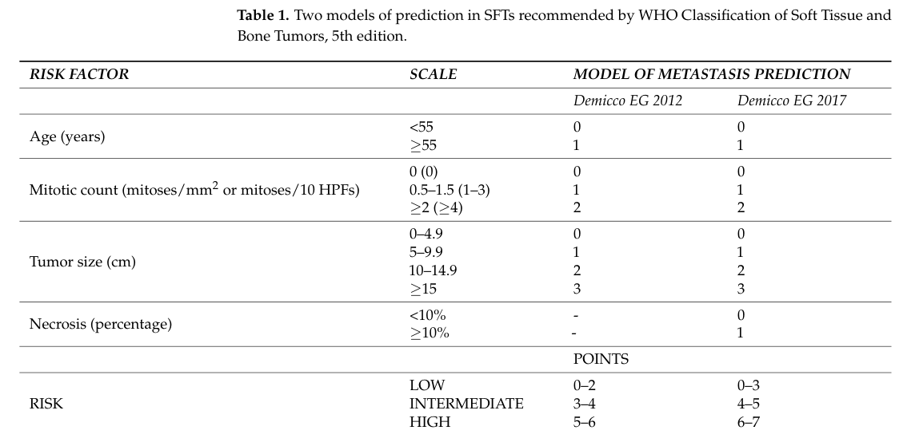

Solitary fibrous tumor (SFT) is a rare fibroblastic mesenchymal neoplasm defined by a recurrent intrachromosomal NAB2-STAT6 gene fusion. The fusion converts the NAB2 transcriptional repressor into an aberrant EGR1-target transcriptional activator, driving constitutive STAT6 nuclear accumulation and fibroblastic proliferation. SFT encompasses tumors formerly termed hemangiopericytoma and characteristically displays a patternless architecture with branching, "staghorn" thin-walled vasculature, CD34 positivity, and diffuse nuclear STAT6 immunoreactivity. Most tumors are slow-growing and arise in the pleura, but extrapleural sites (meninges, abdomen, pelvis, extremities, head and neck) are common. Clinical behavior ranges from benign to malignant; risk of recurrence and metastasis is stratified using patient age, tumor size, mitotic index, and necrosis. A subset secretes "Big-IGF-II" causing paraneoplastic hypoglycemia (Doege-Potter syndrome). Malignant and dedifferentiated SFT carry additional TP53/TERT-promoter alterations and behave aggressively. Complete surgical resection is the mainstay of cure; antiangiogenic agents are the standard systemic backbone for advanced disease.
Ask a research question about Solitary Fibrous Tumor. OpenScientist will conduct autonomous deep research using the Disorder Mechanisms Knowledge Base and PubMed literature (typically 10-30 minutes).
Do not include personal health information in your question. Questions and results are cached in your browser's local storage.
name: Solitary Fibrous Tumor
creation_date: '2026-06-08T00:00:00Z'
description: >-
Solitary fibrous tumor (SFT) is a rare fibroblastic mesenchymal neoplasm
defined by a recurrent intrachromosomal NAB2-STAT6 gene fusion. The fusion
converts the NAB2 transcriptional repressor into an aberrant EGR1-target
transcriptional activator, driving constitutive STAT6 nuclear accumulation and
fibroblastic proliferation. SFT encompasses tumors formerly termed
hemangiopericytoma and characteristically displays a patternless architecture
with branching, "staghorn" thin-walled vasculature, CD34 positivity, and
diffuse nuclear STAT6 immunoreactivity. Most tumors are slow-growing and
arise in the pleura, but extrapleural sites (meninges, abdomen, pelvis,
extremities, head and neck) are common. Clinical behavior ranges from benign
to malignant; risk of recurrence and metastasis is stratified using patient
age, tumor size, mitotic index, and necrosis. A subset secretes "Big-IGF-II"
causing paraneoplastic hypoglycemia (Doege-Potter syndrome). Malignant and
dedifferentiated SFT carry additional TP53/TERT-promoter alterations and behave
aggressively. Complete surgical resection is the mainstay of cure; antiangiogenic
agents are the standard systemic backbone for advanced disease.
categories:
- Sarcoma
- Rare Cancer
parents:
- mesenchymal cell neoplasm
disease_term:
preferred_term: solitary fibrous tumor
term:
id: MONDO:0016238
label: solitary fibrous tumor
has_subtypes:
- name: Pleural SFT
display_name: Pleural/Thoracic Solitary Fibrous Tumor
description: >-
The classic and most common presentation, arising from the visceral or
parietal pleura. Frequently asymptomatic and discovered incidentally, larger
lesions cause cough, dyspnea, or chest pain. Most are benign with a NAB2-STAT6
fusion; complete surgical resection is usually curative. Pleural SFTs may
present with paraneoplastic hypoglycemia (Doege-Potter syndrome).
- name: Extrapleural SFT
display_name: Extrapleural / Meningeal Solitary Fibrous Tumor
description: >-
SFT arising outside the pleura, including the meninges/central nervous system
(formerly hemangiopericytoma), abdomen, pelvis, retroperitoneum, head and neck,
and extremities. Meningeal/intracranial SFTs share the NAB2-STAT6 fusion and
are graded by the WHO CNS classification; they carry a notable risk of local
recurrence and metastasis and often require postoperative radiotherapy.
- name: Malignant SFT
display_name: Malignant / Dedifferentiated Solitary Fibrous Tumor
description: >-
A higher-grade form defined by high mitotic activity, large size, necrosis,
and/or hypercellularity, frequently with additional TP53 and TERT-promoter
alterations and loss of APAF1. Dedifferentiated SFT shows abrupt transition to
a high-grade, often anaplastic sarcoma and behaves aggressively with high rates
of metastasis. Antiangiogenic therapy is favored for advanced non-dedifferentiated
disease.
evidence:
- reference: PMID:31321477
reference_title: "Molecular changes in solitary fibrous tumor progression."
supports: SUPPORT
evidence_source: HUMAN_CLINICAL
snippet: >-
a TERT promoter mutation was detected in 7/73 (10%) cases, and it showed a
significant association with malignant SFTs
explanation: >-
Supports the definition of malignant SFT as a molecularly distinct,
higher-risk subtype enriched for TERT-promoter mutations.
pathophysiology:
- name: NAB2-STAT6 Fusion Oncogene
description: >-
A recurrent intrachromosomal rearrangement on chromosome 12q13 fuses the NAB2
gene to STAT6. NAB2-STAT6 is the defining molecular feature of SFT, identified
by whole-exome sequencing across the SFT spectrum (including tumors formerly
called hemangiopericytoma). The chimeric product joins the truncated repressor
domain of NAB2 to the intact transactivation domain of STAT6.
cell_types:
- preferred_term: fibroblast
term:
id: CL:0000057
label: fibroblast
gene_products:
- preferred_term: NAB2-STAT6 fusion protein
term:
id: NCIT:C122820
label: NAB2/STAT6 Fusion Protein
evidence:
- reference: PMID:23313954
reference_title: "Whole-exome sequencing identifies a recurrent NAB2-STAT6 fusion in solitary fibrous tumors."
supports: SUPPORT
evidence_source: HUMAN_CLINICAL
snippet: >-
Analysis in 53 tumors confirmed the presence of 7 variants of this fusion
transcript in 29 tumors (55%), representing a lower bound for fusion
frequency at this locus and suggesting that the NAB2-STAT6 fusion is a
distinct molecular feature of SFTs.
explanation: >-
Landmark whole-exome sequencing study establishing the recurrent NAB2-STAT6
fusion as the defining driver of solitary fibrous tumor.
downstream:
- target: Aberrant EGR1-Target Transactivation
description: >-
The chimeric protein converts NAB2's repressor function into an EGR1-target
transcriptional activator.
- name: Aberrant EGR1-Target Transactivation
description: >-
Native NAB2 represses EGR1 (EGR-1) target genes. The NAB2-STAT6 fusion replaces
the NAB2 repressor activity with the STAT6 transactivation domain, so EGR1-target
genes are aberrantly activated. STAT6 accumulates in the nucleus (the basis of the
diagnostic nuclear STAT6 immunostain). Upregulation of EGR1 and its proliferation-
associated target IGF2 drives p-Rb/cyclin D1 and enhanced proliferation.
biological_processes:
- preferred_term: regulation of DNA-templated transcription
modifier: INCREASED
term:
id: GO:0006355
label: regulation of DNA-templated transcription
- preferred_term: positive regulation of transcription by RNA polymerase II
modifier: INCREASED
term:
id: GO:0045944
label: positive regulation of transcription by RNA polymerase II
gene_products:
- preferred_term: Signal Transducer and Activator of Transcription 6
term:
id: NCIT:C28670
label: Signal Transducer and Activator of Transcription 6
evidence:
- reference: PMID:32216968
reference_title: "NAB2-STAT6 fusion protein mediates cell proliferation and oncogenic progression via EGR-1 regulation."
supports: SUPPORT
evidence_source: IN_VITRO
snippet: >-
we found that EGR-1 and the proliferation-related EGR-1 target gene IGF2 were
upregulated in NIH-3T3 cells transfected with NAB2-STAT6.
explanation: >-
In vitro evidence that the NAB2-STAT6 fusion aberrantly activates EGR-1 and its
target IGF2, the mechanistic basis for fibroblastic proliferation in SFT.
downstream:
- target: Fibroblastic Proliferation
description: >-
EGR1/IGF2-driven cell-cycle entry (p-Rb, cyclin D1) sustains tumor-cell
proliferation.
- target: Paraneoplastic Big-IGF-II Secretion (Doege-Potter Syndrome)
description: >-
EGR1-driven IGF2 upregulation downstream of NAB2-STAT6 provides the
mechanistic basis for Big-IGF-II overproduction in a subset of SFTs.
- name: Fibroblastic Proliferation
description: >-
Aberrant EGR1/IGF2 signaling drives p-Rb (Ser795) and cyclin D1 upregulation and
enhanced proliferation of the spindled fibroblastic tumor cells, producing the
patternless, variably cellular architecture of SFT with branching "staghorn"
thin-walled vasculature.
cell_types:
- preferred_term: fibroblast
term:
id: CL:0000057
label: fibroblast
biological_processes:
- preferred_term: cell population proliferation
modifier: INCREASED
term:
id: GO:0008283
label: cell population proliferation
- preferred_term: angiogenesis
term:
id: GO:0001525
label: angiogenesis
evidence:
- reference: PMID:32216968
reference_title: "NAB2-STAT6 fusion protein mediates cell proliferation and oncogenic progression via EGR-1 regulation."
supports: SUPPORT
evidence_source: IN_VITRO
snippet: >-
p-Rb (Ser795) and cyclin D1 levels were upregulated, and cell proliferation was
also enhanced.
explanation: >-
Demonstrates that NAB2-STAT6 expression drives cell-cycle progression and
proliferation of fibroblastic cells.
downstream:
- target: Malignant Transformation via TP53/TERT
description: >-
A subset of established SFTs acquire additional TERT-promoter and TP53
alterations with APAF1 loss, driving malignant transformation and
dedifferentiation on the background of the proliferating tumor.
- name: Paraneoplastic Big-IGF-II Secretion (Doege-Potter Syndrome)
description: >-
A subset of SFTs secretes incompletely processed insulin-like growth factor II
("Big-IGF-II"), a precursor of IGF-II. This prohormone aberrantly activates
insulin/IGF receptors, inhibiting gluconeogenesis and stimulating glucose uptake,
producing recurrent non-islet-cell tumor hypoglycemia known as Doege-Potter
syndrome. EGR1-driven IGF2 upregulation downstream of NAB2-STAT6 provides a
mechanistic link to the tumor's IGF-II production.
biological_processes:
- preferred_term: insulin-like growth factor receptor signaling pathway
modifier: INCREASED
term:
id: GO:0048009
label: insulin-like growth factor receptor signaling pathway
- preferred_term: gluconeogenesis
modifier: DECREASED
term:
id: GO:0006094
label: gluconeogenesis
gene_products:
- preferred_term: Insulin-Like Growth Factor II
term:
id: NCIT:C16744
label: Insulin-Like Growth Factor II
evidence:
- reference: PMID:38441351
reference_title: "Effective management of recurrent Doege-Potter syndrome with somatostatin-analogues: A case report."
supports: SUPPORT
evidence_source: HUMAN_CLINICAL
snippet: >-
Hypoglycemia can be attributed to paraneoplastic secretion of "Big-IGF-II," a
precursor of Insulin-like growth factor-II.
explanation: >-
Establishes Big-IGF-II secretion as the mechanism of Doege-Potter syndrome in SFT.
downstream:
- target: Tumor-Induced Hypoglycemia
description: Big-IGF-II suppresses gluconeogenesis and increases glucose uptake.
- name: Tumor-Induced Hypoglycemia
description: >-
Big-IGF-II activation of insulin receptors inhibits gluconeogenesis, activates
glycolysis, and stimulates cellular glucose uptake, culminating in recurrent
tumor-induced hypoglycemic episodes that resolve with tumor resection.
biological_processes:
- preferred_term: gluconeogenesis
modifier: DECREASED
term:
id: GO:0006094
label: gluconeogenesis
evidence:
- reference: PMID:38441351
reference_title: "Effective management of recurrent Doege-Potter syndrome with somatostatin-analogues: A case report."
supports: SUPPORT
evidence_source: HUMAN_CLINICAL
snippet: >-
inhibition of gluconeogenesis, activation of glycolysis and stimulation of
cellular glucose uptake culminating in recurrent tumor-induced hypoglycemic
episodes.
explanation: >-
Describes the metabolic mechanism producing paraneoplastic hypoglycemia in
Doege-Potter syndrome.
- name: Malignant Transformation via TP53/TERT
description: >-
Progression to malignant SFT is associated with TERT-promoter mutations and
acquired TP53 dysfunction (TP53 immunopositivity) together with loss of APAF1,
impairing apoptosis and contributing to aggressive, metastasizing behavior and
dedifferentiation.
biological_processes:
- preferred_term: apoptotic process
modifier: DECREASED
term:
id: GO:0006915
label: apoptotic process
- preferred_term: cell population proliferation
modifier: INCREASED
term:
id: GO:0008283
label: cell population proliferation
evidence:
- reference: PMID:31321477
reference_title: "Molecular changes in solitary fibrous tumor progression."
supports: SUPPORT
evidence_source: HUMAN_CLINICAL
snippet: >-
Our study suggests that dysfunction of TP53 and APAF1 leads to impaired
apoptotic function, and eventually contributes toward malignant SFT
transformation.
explanation: >-
Links TP53 and APAF1 dysfunction to impaired apoptosis driving malignant SFT
transformation.
phenotypes:
- category: Clinical
name: Soft Tissue Mass
description: >-
SFT typically presents as a slow-growing, often painless mass; pleural lesions
may be incidental, while large tumors cause local compressive symptoms.
phenotype_term:
preferred_term: Neoplasm
term:
id: HP:0002664
label: Neoplasm
evidence:
- reference: PMID:23313954
reference_title: "Whole-exome sequencing identifies a recurrent NAB2-STAT6 fusion in solitary fibrous tumors."
supports: SUPPORT
evidence_source: HUMAN_CLINICAL
snippet: Solitary fibrous tumors (SFTs) are rare mesenchymal tumors.
explanation: Confirms SFT as a discrete mesenchymal neoplasm presenting as a mass.
- category: Clinical
name: Hypoglycemia
description: >-
Paraneoplastic hypoinsulinemic hypoglycemia from Big-IGF-II secretion
(Doege-Potter syndrome), occurring with pleural and extrapleural SFT.
phenotype_term:
preferred_term: Hypoglycemia
term:
id: HP:0001943
label: Hypoglycemia
temporality: RECURRENT
evidence:
- reference: PMID:38441351
reference_title: "Effective management of recurrent Doege-Potter syndrome with somatostatin-analogues: A case report."
supports: SUPPORT
evidence_source: HUMAN_CLINICAL
snippet: >-
Doege-Potter syndrome is defined as paraneoplastic hypoinsulinemic
hypoglycemia associated with a benign or malignant solitary fibrous tumor
frequently located in pleural, but also extrapleural sites.
explanation: Directly supports hypoglycemia as a paraneoplastic phenotype of SFT.
- category: Clinical
name: Dyspnea
description: >-
Large pleural/thoracic SFTs compress lung parenchyma and airways, producing
breathlessness, cough, and chest discomfort.
subtype: Pleural SFT
phenotype_term:
preferred_term: Dyspnea
term:
id: HP:0002094
label: Dyspnea
notes: >-
Dyspnea, cough, and chest pain are well-recognized compressive symptoms of
large pleural/thoracic SFTs, but no exact supporting snippet is available in
the currently cached references; the available systemic-therapy reference
(PMID:42149317) addresses treatment rather than respiratory symptoms, so the
evidence block has been omitted pending a properly quotable source.
histopathology:
- name: Vascular Staghorn Configuration
finding_term:
preferred_term: Vascular Staghorn Configuration
term:
id: NCIT:C35970
label: Vascular Staghorn Configuration
diagnostic: true
description: >-
Branching, thin-walled "staghorn" (hemangiopericytoma-like) vasculature is a
characteristic architectural hallmark of SFT.
- name: Spindle Cell Pattern
finding_term:
preferred_term: Spindle Cell Pattern
term:
id: NCIT:C53643
label: Spindle Cell Pattern
description: >-
Patternless arrangement of bland spindled-to-ovoid fibroblastic cells with
variable cellularity and interspersed collagen, typical of SFT.
biochemical:
- name: Nuclear STAT6 Expression
biomarker_term:
preferred_term: Signal Transducer and Activator of Transcription 6
term:
id: NCIT:C28670
label: Signal Transducer and Activator of Transcription 6
notes: >-
Diffuse nuclear STAT6 immunoreactivity is a highly sensitive and specific
surrogate for the NAB2-STAT6 fusion and is the key diagnostic immunostain for SFT.
evidence:
- reference: PMID:26722515
reference_title: "Immunohistochemical detection of STAT6, CD34, CD99 and BCL-2 for diagnosing solitary fibrous tumors/hemangiopericytomas."
supports: SUPPORT
evidence_source: HUMAN_CLINICAL
snippet: >-
Nuclear STAT6 positive staining was present in 51 cases (51/53, sensitivity
96.2%)
explanation: >-
Demonstrates high sensitivity of nuclear STAT6 immunostaining for diagnosing SFT.
- name: CD34 Expression
biomarker_term:
preferred_term: Hematopoietic Progenitor Cell Antigen CD34
term:
id: NCIT:C17280
label: Hematopoietic Progenitor Cell Antigen CD34
notes: >-
CD34 is positive in the majority of SFTs and, together with CD99 and Bcl-2,
supports the diagnosis alongside nuclear STAT6.
evidence:
- reference: PMID:26722515
reference_title: "Immunohistochemical detection of STAT6, CD34, CD99 and BCL-2 for diagnosing solitary fibrous tumors/hemangiopericytomas."
supports: SUPPORT
evidence_source: HUMAN_CLINICAL
snippet: 'CD34 was positive in 47 cases (47/53, sensitivity 88.7%)'
explanation: Supports CD34 positivity as a characteristic SFT immunophenotype.
- name: Big-IGF-II
biomarker_term:
preferred_term: Insulin-Like Growth Factor II
term:
id: NCIT:C16744
label: Insulin-Like Growth Factor II
notes: >-
Incompletely processed insulin-like growth factor II precursor secreted by a
subset of SFTs; the biochemical mediator of Doege-Potter paraneoplastic
hypoglycemia. Suppressed insulin and IGF-I with an elevated IGF-II:IGF-I ratio
supports the diagnosis of non-islet-cell tumor hypoglycemia.
genetic:
- name: NAB2-STAT6 fusion
gene_term:
preferred_term: STAT6
term:
id: hgnc:11368
label: STAT6
variant_origin: SOMATIC
notes: >-
The recurrent NAB2-STAT6 fusion (NAB2 hgnc:7627; STAT6 hgnc:11368) is the
pathognomonic somatic driver of SFT. It arises from an intrachromosomal
rearrangement on 12q13; its protein product accumulates in the nucleus and is
detectable by STAT6 immunohistochemistry.
evidence:
- reference: PMID:23313954
reference_title: "Whole-exome sequencing identifies a recurrent NAB2-STAT6 fusion in solitary fibrous tumors."
supports: SUPPORT
evidence_source: HUMAN_CLINICAL
snippet: >-
Here, we describe the identification of a NAB2-STAT6 fusion from whole-exome
sequencing of 17 SFTs.
explanation: Identifies the somatic NAB2-STAT6 fusion as the genetic basis of SFT.
- name: NAB2 (NAB2-STAT6 fusion partner)
gene_term:
preferred_term: NAB2
term:
id: hgnc:7627
label: NAB2
variant_origin: SOMATIC
notes: >-
NAB2 is the 5' partner of the pathognomonic NAB2-STAT6 fusion. The
intrachromosomal 12q13 rearrangement joins the truncated NAB2 transcriptional
repressor domain to the STAT6 transactivation domain, converting NAB2 from an
EGR1-target repressor into an aberrant activator. Captured as a separate gene
entry for gene-based discoverability alongside STAT6 (hgnc:11368).
evidence:
- reference: PMID:23313954
reference_title: "Whole-exome sequencing identifies a recurrent NAB2-STAT6 fusion in solitary fibrous tumors."
supports: SUPPORT
evidence_source: HUMAN_CLINICAL
snippet: >-
Here, we describe the identification of a NAB2-STAT6 fusion from whole-exome
sequencing of 17 SFTs.
explanation: Identifies NAB2 as the 5' partner gene of the somatic SFT-defining fusion.
treatments:
- name: Surgical Resection
description: >-
Complete surgical resection is the cornerstone of curative treatment for
localized SFT; meningeal SFTs are managed by gross total or subtotal resection.
treatment_term:
preferred_term: surgical procedure
term:
id: MAXO:0000004
label: surgical procedure
therapeutic_modality: SURGERY
evidence:
- reference: PMID:42149317
reference_title: "Systemic Therapy for Solitary Fibrous Tumor."
supports: SUPPORT
evidence_source: HUMAN_CLINICAL
snippet: >-
Complete surgical resection constitutes the cornerstone of treatment for
localized disease
explanation: Establishes surgery as the primary curative treatment for localized SFT.
- name: Postoperative Radiotherapy
description: >-
Adjuvant radiotherapy is used for meningeal/intracranial SFT after resection to
reduce local recurrence, given the high recurrence risk of these tumors.
treatment_term:
preferred_term: radiation therapy
term:
id: MAXO:0000014
label: radiation therapy
therapeutic_modality: RADIOTHERAPY
evidence:
- reference: PMID:40354004
reference_title: "Meningeal malignant solitary fibrous tumor with multiple recurrence, extracranial extension, cervical lymph node metastases: case report and review of the literature."
supports: SUPPORT
evidence_source: HUMAN_CLINICAL
snippet: >-
Postoperative radiotherapy (PORT) whether gross total resection (GTR) or
subtotal resection (STR) may be the optimal treatment strategy
explanation: >-
Supports adjuvant radiotherapy after resection of meningeal malignant SFT.
- name: Antiangiogenic Therapy
description: >-
Antiangiogenic tyrosine kinase inhibitors (e.g., pazopanib) are the standard
systemic backbone for locally advanced or metastatic non-dedifferentiated SFT.
treatment_term:
preferred_term: Pharmacotherapy
term:
id: NCIT:C15986
label: Pharmacotherapy
therapeutic_agent:
- preferred_term: pazopanib
term:
id: CHEBI:71219
label: pazopanib
therapeutic_modality: SMALL_MOLECULE
target_mechanisms:
- target: Fibroblastic Proliferation
treatment_effect: INHIBITS
description: >-
Antiangiogenic tyrosine kinase inhibitors target the tumor angiogenesis
(GO:0001525) that supports the proliferating fibroblastic compartment.
evidence:
- reference: PMID:42149317
reference_title: "Systemic Therapy for Solitary Fibrous Tumor."
supports: SUPPORT
evidence_source: HUMAN_CLINICAL
snippet: >-
Antiangiogenic agents have shown promising outcomes, particularly in
non-dedifferentiated SFT, and are increasingly favored by some as first-line
options.
explanation: >-
Supports antiangiogenic therapy as the standard systemic backbone for advanced SFT.
- name: Somatostatin Analogue Therapy
description: >-
Somatostatin analogues (octreotide, lanreotide) can help control paraneoplastic
hypoglycemia in Doege-Potter syndrome when complete resection is not feasible.
treatment_term:
preferred_term: Pharmacotherapy
term:
id: NCIT:C15986
label: Pharmacotherapy
therapeutic_agent:
- preferred_term: octreotide
term:
id: CHEBI:7726
label: octreotide
therapeutic_modality: PEPTIDE
target_mechanisms:
- target: Paraneoplastic Big-IGF-II Secretion (Doege-Potter Syndrome)
treatment_effect: INHIBITS
description: >-
Somatostatin analogues suppress tumor secretion of Big-IGF-II, mitigating
the paraneoplastic driver of Doege-Potter hypoglycemia.
evidence:
- reference: PMID:38441351
reference_title: "Effective management of recurrent Doege-Potter syndrome with somatostatin-analogues: A case report."
supports: SUPPORT
evidence_source: HUMAN_CLINICAL
snippet: >-
The somatostatin-analogue Lanreotide was successfully used after tumor
debulking surgery (R2-resection) to maintain adequate blood glucose control.
explanation: >-
Supports somatostatin analogues for controlling Doege-Potter hypoglycemia when
resection is incomplete.
references:
- reference: PMID:22575866
title: >-
Solitary fibrous tumor: a clinicopathological study of 110 cases and proposed
risk assessment model.
Solitary fibrous tumor (SFT) is a rare fibroblastic mesenchymal neoplasm that can arise in many anatomical sites and often behaves indolently but has an unpredictable propensity for local recurrence and distant metastasis (ren2024advancesinthe pages 1-2, janik2023diagnosticsandtreatment pages 1-2). A defining molecular hallmark is the NAB2::STAT6 gene fusion, and nuclear STAT6 immunohistochemistry (IHC) is widely used as a surrogate diagnostic marker (ren2024advancesinthe pages 1-2, ren2024advancesinthe pages 10-12, janik2023diagnosticsandtreatment pages 1-2).
Recent synthesis characterizes SFT as “a rare fibroblastic mesenchymal neoplasm” (Ren 2024, published Aug 2024) (https://doi.org/10.1007/s10555-024-10204-8) (ren2024advancesinthe pages 1-2).
This report integrates: - Aggregated cohort/registry evidence (SEER analysis; CNS cohort studies; systematic reviews) (wu2024clinicaloutcomesof pages 1-2, piccinelli2024demographicandclinical pages 1-2, tolstrup2024riskfactorsfor pages 1-2). - Aggregated review evidence (molecular/clinical reviews) (ren2024advancesinthe pages 1-2, janik2023diagnosticsandtreatment pages 1-2). - Individual case-based molecular pathology (e.g., intraosseous/epithelioid variants) used mainly for diagnostic marker panels and molecular confirmation methods (argyris2024primaryintraosseoussolitary pages 1-2, zhao2024epithelioidsolitaryfibrous pages 1-2).
SFT is primarily driven by a somatic intrachromosomal rearrangement on chromosome 12q13 producing the NAB2–STAT6 fusion (ren2024advancesinthe pages 1-2, zhao2024epithelioidsolitaryfibrous pages 1-2). Mechanistically, the fusion alters transcriptional control: Ren 2024 states the fusion “transforms NAB2 into a transcriptional activator, activating early growth response 1 (EGR1)” (https://doi.org/10.1007/s10555-024-10204-8; Aug 2024) (ren2024advancesinthe pages 1-2).
Evidence in the retrieved corpus supports prognostic risk factors (risk of recurrence/metastasis) more than pre-disease exposures: - The 2024 systematic review found the most consistent recurrence predictors were high mitotic index, high Ki‑67, and necrosis (Tolstrup 2024; Jan 2024) (https://doi.org/10.3389/fsurg.2024.1332421) (tolstrup2024riskfactorsfor pages 1-2). - Molecular risk factors/biomarkers suggested to refine risk include TERT promoter mutations and TP53 alterations, with additional factors (APAF1 inactivation, etc.) variably reported (yao2024prognosticanalysisof pages 1-2, janik2023diagnosticsandtreatment pages 16-17, tolstrup2024riskfactorsfor pages 1-2).
Pre-disease environmental/lifestyle risks: not established in the retrieved sources; SFT is generally treated as a sporadic tumor entity.
No protective genetic/environmental factors were identified in the retrieved evidence.
No gene–environment interaction evidence was identified in the retrieved evidence.
SFTs often present as slow-growing masses and can be asymptomatic depending on site (ren2024advancesinthe pages 1-2, janik2023diagnosticsandtreatment pages 1-2). Symptomatology is largely site-driven (compression, pain, neurologic deficits in CNS, etc.). In malignant pleural SFT, a majority in one cohort were symptomatic (62%) (ricciardi2023malignantsolitaryfibrous pages 1-2).
Core morphologic phenotype includes spindle-to-ovoid cells with a prominent branching (“staghorn”) vasculature. For example, an intraosseous case review described “a haphazardly-arranged population of spindled-to-ovoid cells surrounding a prominent, branching and hyalinized vasculature” (Argyris 2024; Dec 2024) (https://doi.org/10.1007/s12105-024-01735-1) (argyris2024primaryintraosseoussolitary pages 1-2).
Because SFT manifestations are site-dependent, suggested HPO terms are necessarily generic: - Mass / tumor: HP:0002664 (Neoplasm) (suggested) - Localized pain: HP:0012531 (Pain) (suggested) - Compression symptoms (site-specific): e.g., HP:0002664 (Neoplasm) + organ-specific dysfunction terms (suggested)
Note: The retrieved evidence did not provide robust phenotype frequency tables beyond site distributions in malignant cohorts (piccinelli2024demographicandclinical pages 1-2).
SFT is generally treated as nonhereditary/sporadic. An RNA-therapy SFT model paper explicitly states: “This nonhereditary cancer is the result of an environmental intrachromosomal gene fusion between NAB2 and STAT6 on chromosome 12” (Li 2023; Jun 2023) (https://doi.org/10.3390/cancers15123127) ().
STAT6 IHC is widely used as a surrogate for NAB2–STAT6 fusion. A key quantitative statement from Ren 2024 notes: “diffuse and robust nuclear expression of STAT6 through IHC was documented in 100% of cases, with concurrent gene fusion detection in 92% of cases through RT-PCR” (https://doi.org/10.1007/s10555-024-10204-8; Aug 2024) (ren2024advancesinthe pages 10-12).
Not extracted from retrieved evidence in this run.
No specific toxins, radiation, lifestyle exposures, or infectious agents were identified as causal or modifying factors in the retrieved evidence.
A large SEER analysis of 1,134 malignant SFT cases (2000–2019) reported primary sites: chest 28–29%, CNS 22–23%, head and neck 11%, pelvis 11%, extremities 10%, abdomen 10%, retroperitoneum 6% (Piccinelli 2024; Sep 2024) (https://doi.org/10.3390/cancers16193331) (piccinelli2024demographicandclinical pages 1-2, piccinelli2024demographicandclinical pages 2-4).
Typical diagnosis is in middle age to older adults; an extrameningeal review notes presentation often in the 50s–70s (janik2023diagnosticsandtreatment pages 1-2). SEER malignant cohort median age was 60 years (piccinelli2024demographicandclinical pages 2-4).
SFT may recur late; a systematic review reports recurrence estimates around 10–20% in many studies, with longer follow-up cohorts reporting >30% (Tolstrup 2024; Jan 2024) (tolstrup2024riskfactorsfor pages 2-3). CNS SFT demonstrates grade-dependent outcomes with median PFS/OS decreasing from grade 1 to grade 3 (wu2024clinicaloutcomesof pages 1-2).
No Mendelian inheritance pattern is supported; evidence emphasizes nonhereditary/sporadic nature ().
Molecular confirmation and characterization may use RT-PCR, targeted RNA sequencing/NGS fusion panels, WGS/WES/RNA-seq, or FISH depending on specimen and clinical need (ren2024advancesinthe pages 10-12, argyris2024primaryintraosseoussolitary pages 1-2). A concrete implementation example is an intraosseous SFT case that used an RNA-based NGS fusion panel (Arriba software) plus a DNA NGS panel and FISH for other differential considerations (Argyris 2024; Dec 2024) (argyris2024primaryintraosseoussolitary pages 1-2).
An epithelioid SFT series noted STAT6/CD34 positivity with negative keratins and other lineage markers, supporting broad differential exclusion in unusual morphologies (Zhao 2024; Oct 2024) (https://doi.org/10.1186/s13000-024-01564-4) (zhao2024epithelioidsolitaryfibrous pages 1-2).
Imaging is important for localization/staging but not diagnostic alone; histologic confirmation is required (review-level statement) (ren2024advancesinthe pages 1-2).
A compact quantitative summary of major outcome and prognostic evidence is provided in the table below.
| Item | Key numbers/findings | Population/context | Source (URL; year) | Evidence citation id |
|---|---|---|---|---|
| Incidence / rarity | Incidence reported at ~0.061 per 100,000/year; also described as 1–2 per million people/year; SFTs account for <2% of soft tissue tumors/masses | General / extrameningeal SFT in reviews | Janik et al., Cancers (https://doi.org/10.3390/cancers15245854; 2023); Ren et al., Cancer Metastasis Rev. (https://doi.org/10.1007/s10555-024-10204-8; 2024) | (janik2023diagnosticsandtreatment pages 1-2, ren2024advancesinthe pages 1-2) |
| Recurrence / metastasis rates | Reviews cite 10–30% recurrence after resection; recurrence/metastasis rate broadly 10–40%; longer-follow-up cohorts may report recurrence >30% | Mixed non-CNS SFT cohorts, especially resected torso/extremity disease | Tolstrup et al., Front Surg (https://doi.org/10.3389/fsurg.2024.1332421; 2024); Zhang et al., Nat Commun (https://doi.org/10.1038/s41467-023-43249-4; 2023) | (tolstrup2024riskfactorsfor pages 1-2, tolstrup2024riskfactorsfor pages 2-3, yao2024prognosticanalysisof pages 1-2) |
| SEER malignant SFT cohort | n=1,134 malignant SFTs; sites: chest 28–29%, CNS 22–23%, head/neck 11%, pelvis 11%, extremities 10%, abdomen 10%, retroperitoneum 6%; stage: localized 42%, locally advanced 35%, metastatic 13%; surgery in 87% | SEER 2000–2019 malignant SFT population-based cohort | Piccinelli et al., Cancers (https://doi.org/10.3390/cancers16193331; 2024) | (piccinelli2024demographicandclinical pages 1-2, piccinelli2024demographicandclinical pages 2-4) |
| SEER prognostic factors | Higher cancer-specific mortality with locally advanced stage HR 1.6, metastatic stage HR 2.9, non-surgical management HR 3.6, tumor size 9–15.9 cm HR 1.6, ≥16 cm HR 1.9 | Multivariable competing-risks analysis in SEER malignant SFT cohort | Piccinelli et al., Cancers (https://doi.org/10.3390/cancers16193331; 2024) | (piccinelli2024demographicandclinical pages 1-2) |
| CNS WHO grade outcomes | Grade 1: median PFS 105 mo, OS 199 mo; Grade 2: PFS 77 mo, OS 145 mo; Grade 3: PFS 44 mo, OS 112 mo; cohort counts: grade 1 86, grade 2 35, grade 3 25 | Reclassified CNS SFT/HPC cohort, n=146, per WHO 2021 CNS classification | Wu et al., J Neurosurg (https://doi.org/10.3171/2023.4.JNS23147; 2024) | (wu2024clinicaloutcomesof pages 1-2) |
| CNS recurrence / mortality / treatment effect | Local recurrence in 61/146; deaths 31/146, of which 27/31 (87.1%) disease-related; subtotal resection worsened PFS (HR 4.648) and OS (HR 3.217); grade 3 worsened PFS (HR 5.814) and OS (HR 3.433) | Same CNS cohort | Wu et al., J Neurosurg (https://doi.org/10.3171/2023.4.JNS23147; 2024) | (wu2024clinicaloutcomesof pages 1-2) |
| Pleural malignant SFT outcomes | 5-year OS 81.2%, 5-year DFS 77.4%; recurrence in 9/34 (26.5%); median follow-up 111 months; median age 67 years | Single-center cohort of malignant pleural SFT, n=34 | Ricciardi et al., J Clin Med (https://doi.org/10.3390/jcm12030966; 2023) | (ricciardi2023malignantsolitaryfibrous pages 1-2) |
| Pleural malignant SFT prognostic factors | Worse OS: necrosis, nuclear atypia, tumor size >11.5 cm, relapse/progression; worse DFS: non-radical resection, larger size, necrosis, nuclear atypia, pleural pattern; Tapias score best predicted OS/DFS | Same malignant pleural SFT cohort | Ricciardi et al., J Clin Med (https://doi.org/10.3390/jcm12030966; 2023) | (ricciardi2023malignantsolitaryfibrous pages 1-2) |
| Recurrence risk factors across studies | Most consistent adverse factors: high mitotic index, necrosis, high Ki-67 index; additional variably associated factors: age, tumor size, sex, margins, location, pleomorphism, hypercellularity, dedifferentiation, CD34, TP53, APAF1, TERT promoter mutation, NAB2::STAT6 variant | 81 retrospective studies in systematic review of resected torso/extremity SFT | Tolstrup et al., Front Surg (https://doi.org/10.3389/fsurg.2024.1332421; 2024) | (tolstrup2024riskfactorsfor pages 2-3, tolstrup2024riskfactorsfor pages 1-2) |
| Modified Demicco model performance caveat | In 111 extrameningeal SFTs, progression still occurred in 3/74 low-risk and 7/21 intermediate-risk cases; TP53 alterations: progression in 3/5; TERT promoter mutations: progression in 3/4 followed cases | East China extrameningeal SFT series, n=111 | Yao et al., Front Oncol (https://doi.org/10.3389/fonc.2023.1272090; 2024) | (yao2024prognosticanalysisof pages 1-2) |
| Demicco risk model variables | WHO-recommended Demicco models use age, tumor size, mitotic count, and in the modified 4-variable model necrosis to assign low/intermediate/high metastatic risk | Risk stratification for extrameningeal SFT | Janik et al., Cancers (https://doi.org/10.3390/cancers15245854; 2023); image extract of Demicco table | (janik2023diagnosticsandtreatment pages 16-17, janik2023diagnosticsandtreatment media 2935871a) |
| WHO/CNS grading variables | CNS WHO grading uses mitotic activity and necrosis: grade 1 <2.5 mitoses/mm², grade 2 ≥2.5 mitoses/mm², grade 3 ≥2.5 mitoses/mm² plus necrosis | WHO 2021 CNS SFT framework | Wu et al., J Neurosurg (https://doi.org/10.3171/2023.4.JNS23147; 2024) | (wu2024clinicaloutcomesof pages 1-2) |
Table: This table compiles the main quantitative epidemiology, prognosis, and risk-model findings for solitary fibrous tumor from the gathered evidence. It is useful as a compact reference for incidence, recurrence, survival, and the variables used in current risk stratification systems.
WHO-referenced models use age, tumor size, mitotic count, and (in a 4-variable modification) necrosis to stratify metastatic risk (janik2023diagnosticsandtreatment pages 16-17). The extracted table image below shows the Demicco scoring framework as presented in a 2023 review (janik2023diagnosticsandtreatment media 2935871a).
The 2024 systematic review identified mitotic index, necrosis, and Ki‑67 as the most solid predictors of recurrence after resection across multiple retrospective studies (tolstrup2024riskfactorsfor pages 1-2). Large-registry evidence indicates stage, surgery, and tumor size independently predict cancer-specific mortality in malignant SFT (piccinelli2024demographicandclinical pages 1-2).
Evidence synthesized in recent reviews indicates: - Conventional chemotherapy has limited durable benefit; one review states conventional chemotherapy is “not associated with long-term positive effects” (Janik 2023; Dec 2023) (janik2023diagnosticsandtreatment pages 13-14). - Anti-angiogenic therapy (TKIs/VEGF-pathway inhibition) shows more consistent disease control and higher response rates by Choi criteria. Janik 2023 summarizes pazopanib as “the best first-line treatment” in the advanced setting with reported Choi partial responses and high disease-control rates, and reports activity for axitinib and sunitinib with median PFS on the order of months (janik2023diagnosticsandtreatment pages 13-14). - A broader systemic-therapy synthesis reports typical outcomes such as pazopanib median PFS ~5–6 months in aggressive SFT trials (with higher Choi response rates than RECIST) and sunitinib median PFS ~6–7 months in series; temozolomide+bevacizumab has reported median PFS ~9.7–10.8 months in retrospective analyses (martinbroto2021acomprehensivereview pages 15-16).
ClinicalTrials.gov evidence in this run identified completed phase II studies specifically in SFT: - Axitinib in advanced SFT (NCT02261207; Phase II; completed; n=17) (). - Pazopanib in SFT (NCT02066285; Phase II; completed; n=96) ().
Note: The retrieved trial records provide trial existence/phase/enrollment; numerical efficacy endpoints were not extracted from the trial registry chunks in this run.
No established primary prevention strategies are supported in the retrieved evidence. Secondary prevention largely corresponds to surveillance/follow-up to detect late recurrence (review consensus) (janik2023diagnosticsandtreatment pages 1-2, tolstrup2024riskfactorsfor pages 1-2).
Robust evidence for naturally occurring SFT in non-human species was not identified in the retrieved, SFT-focused corpus for this run. (A separate veterinary sarcoma imaging/metastasis paper retrieved was not SFT-specific and is therefore not used to support SFT natural-history claims.)
Recent and emerging SFT research leverages engineered and patient-derived models: - CRISPR/SpCas9 engineered in vitro models harboring NAB2–STAT6, used to evaluate fusion-specific antisense oligonucleotides and CRISPR/CasRx approaches (Li 2023; Jun 2023) (https://doi.org/10.3390/cancers15123127) (). - Inducible fusion-expression cell models for chromatin/transcriptional studies and use of primary human tumor material for ChIP-seq-based mapping of fusion-associated binding (hill2025nab2stat6drivesan pages 4-6). - Patient-derived xenograft (mouse) models are reported in RNA/antisense oligonucleotide development literature (e.g., STAT6-targeting ASO studies) (Li 2024; Jun 2024) (https://doi.org/10.1016/j.omtn.2024.102154) ().
The following image extract shows a WHO-referenced Demicco risk stratification table (variables: age, tumor size, mitotic count, necrosis) as presented in a 2023 review. (janik2023diagnosticsandtreatment media 2935871a)
References
(OpenTargets Search: Solitary fibrous tumor): Open Targets Query (Solitary fibrous tumor, 15 results). Buniello, A. et al. (2025). Open Targets Platform: facilitating therapeutic hypotheses building in drug discovery. Nucleic Acids Research.
(ren2024advancesinthe pages 1-2): Chongmin Ren, Gina Z D'Amato, Francis J Hornicek, Hao Tao, and Zhenfeng Duan. Advances in the molecular biology of the solitary fibrous tumor and potential impact on clinical applications. Cancer Metastasis Reviews, 43:1337-1352, Aug 2024. URL: https://doi.org/10.1007/s10555-024-10204-8, doi:10.1007/s10555-024-10204-8. This article has 21 citations.
(piccinelli2024demographicandclinical pages 1-2): Mattia Luca Piccinelli, Kyle Law, Reha-Baris Incesu, Stefano Tappero, Cristina Cano Garcia, Francesco Barletta, Simone Morra, Lukas Scheipner, Andrea Baudo, Zhe Tian, Stefano Luzzago, Francesco Alessandro Mistretta, Matteo Ferro, Fred Saad, Shahrokh F. Shariat, Luca Carmignani, Sascha Ahyai, Nicola Longo, Alberto Briganti, Felix K. H. Chun, Carlo Terrone, Derya Tilki, Ottavio de Cobelli, Gennaro Musi, and Pierre I. Karakiewicz. Demographic and clinical characteristics of malignant solitary fibrous tumors: a seer database analysis. Cancers, 16:3331, Sep 2024. URL: https://doi.org/10.3390/cancers16193331, doi:10.3390/cancers16193331. This article has 12 citations.
(janik2023diagnosticsandtreatment pages 1-2): Anna Maria Janik, Anna Terlecka, Mateusz J. Spałek, Kjetil Boye, Bartłomiej Szostakowski, Paulina Chmiel, Anna Szumera-Ciećkiewicz, Klaudia Bobak, Tomasz Świtaj, Piotr Rutkowski, and Anna M. Czarnecka. Diagnostics and treatment of extrameningeal solitary fibrous tumors. Cancers, 15:5854, Dec 2023. URL: https://doi.org/10.3390/cancers15245854, doi:10.3390/cancers15245854. This article has 21 citations.
(ren2024advancesinthe pages 10-12): Chongmin Ren, Gina Z D'Amato, Francis J Hornicek, Hao Tao, and Zhenfeng Duan. Advances in the molecular biology of the solitary fibrous tumor and potential impact on clinical applications. Cancer Metastasis Reviews, 43:1337-1352, Aug 2024. URL: https://doi.org/10.1007/s10555-024-10204-8, doi:10.1007/s10555-024-10204-8. This article has 21 citations.
(wu2024clinicaloutcomesof pages 1-2): Yingxi Wu, Tianzhi Zhao, Yaning Cai, Min Zheng, Yunze Zhang, Yan Qu, and Qing Cai. Clinical outcomes of solitary fibrous tumors and hemangiopericytomas and risk factors related to recurrence and survival based on the 2021 who classification of central nervous system tumors. Journal of Neurosurgery, 140(1):69-79, Jan 2024. URL: https://doi.org/10.3171/2023.4.jns23147, doi:10.3171/2023.4.jns23147. This article has 27 citations and is from a domain leading peer-reviewed journal.
(tolstrup2024riskfactorsfor pages 1-2): Johan Tolstrup, Anand Loya, Ninna Aggerholm-Pedersen, Louise Preisler, and Luit Penninga. Risk factors for recurrent disease after resection of solitary fibrous tumor: a systematic review. Frontiers in Surgery, Jan 2024. URL: https://doi.org/10.3389/fsurg.2024.1332421, doi:10.3389/fsurg.2024.1332421. This article has 21 citations.
(argyris2024primaryintraosseoussolitary pages 1-2): Prokopios P. Argyris, Kristie L. Wise, Kristin K. McNamara, Daniel M. Jones, and John R. Kalmar. Primary intraosseous solitary fibrous tumor of the mandible: report of a diagnostically challenging case with nab2::stat6 fusion and review of the literature. Head and neck pathology, 18 1:128, Dec 2024. URL: https://doi.org/10.1007/s12105-024-01735-1, doi:10.1007/s12105-024-01735-1. This article has 1 citations and is from a peer-reviewed journal.
(zhao2024epithelioidsolitaryfibrous pages 1-2): Lina Zhao, Jiajing Ma, Jiacai Ren, Jingping Yuan, Huihua He, Yabing Huang, and Honglin Yan. Epithelioid solitary fibrous tumors from cns and soft tissues: an unusual morphologic variant. Diagnostic Pathology, Oct 2024. URL: https://doi.org/10.1186/s13000-024-01564-4, doi:10.1186/s13000-024-01564-4. This article has 2 citations and is from a peer-reviewed journal.
(yao2024prognosticanalysisof pages 1-2): Chen-chen Yao, Jian Zhou, Xiao Li, Jun Yang, Gang Chen, Jia Wei, Qin-he Fan, and Qi-xing Gong. Prognostic analysis of extrameningeal solitary fibrous tumor using the modified demicco model: a clinicopathologic study of 111 chinese cases. Frontiers in Oncology, Jan 2024. URL: https://doi.org/10.3389/fonc.2023.1272090, doi:10.3389/fonc.2023.1272090. This article has 2 citations.
(janik2023diagnosticsandtreatment pages 16-17): Anna Maria Janik, Anna Terlecka, Mateusz J. Spałek, Kjetil Boye, Bartłomiej Szostakowski, Paulina Chmiel, Anna Szumera-Ciećkiewicz, Klaudia Bobak, Tomasz Świtaj, Piotr Rutkowski, and Anna M. Czarnecka. Diagnostics and treatment of extrameningeal solitary fibrous tumors. Cancers, 15:5854, Dec 2023. URL: https://doi.org/10.3390/cancers15245854, doi:10.3390/cancers15245854. This article has 21 citations.
(ricciardi2023malignantsolitaryfibrous pages 1-2): Sara Ricciardi, Delia Giovanniello, Luigi Carbone, Francesco Carleo, Marco Di Martino, Massimo Osvaldo Jaus, Sara Mantovani, Stefano Treggiari, Andrea Tornese, and Giuseppe Cardillo. Malignant solitary fibrous tumours of the pleura are not all the same: analysis of long-term outcomes and evaluation of risk stratification models in a large single-centre series. Journal of Clinical Medicine, 12:966, Jan 2023. URL: https://doi.org/10.3390/jcm12030966, doi:10.3390/jcm12030966. This article has 4 citations.
(hill2025nab2stat6drivesan pages 4-6): Connor M Hill, Alexandra Indeglia, Francis Picone, Maureen E Murphy, Cara Cipriano, Robert G Maki, and Alessandro Gardini. Nab2-stat6 drives an egr1-dependent neuroendocrine program in solitary fibrous tumors. Feb 2025. URL: https://doi.org/10.7554/elife.98072, doi:10.7554/elife.98072. This article has 7 citations.
(hill2025nab2stat6drivesan pages 1-3): Connor M Hill, Alexandra Indeglia, Francis Picone, Maureen E Murphy, Cara Cipriano, Robert G Maki, and Alessandro Gardini. Nab2-stat6 drives an egr1-dependent neuroendocrine program in solitary fibrous tumors. Feb 2025. URL: https://doi.org/10.7554/elife.98072, doi:10.7554/elife.98072. This article has 7 citations.
(piccinelli2024demographicandclinical pages 2-4): Mattia Luca Piccinelli, Kyle Law, Reha-Baris Incesu, Stefano Tappero, Cristina Cano Garcia, Francesco Barletta, Simone Morra, Lukas Scheipner, Andrea Baudo, Zhe Tian, Stefano Luzzago, Francesco Alessandro Mistretta, Matteo Ferro, Fred Saad, Shahrokh F. Shariat, Luca Carmignani, Sascha Ahyai, Nicola Longo, Alberto Briganti, Felix K. H. Chun, Carlo Terrone, Derya Tilki, Ottavio de Cobelli, Gennaro Musi, and Pierre I. Karakiewicz. Demographic and clinical characteristics of malignant solitary fibrous tumors: a seer database analysis. Cancers, 16:3331, Sep 2024. URL: https://doi.org/10.3390/cancers16193331, doi:10.3390/cancers16193331. This article has 12 citations.
(tolstrup2024riskfactorsfor pages 2-3): Johan Tolstrup, Anand Loya, Ninna Aggerholm-Pedersen, Louise Preisler, and Luit Penninga. Risk factors for recurrent disease after resection of solitary fibrous tumor: a systematic review. Frontiers in Surgery, Jan 2024. URL: https://doi.org/10.3389/fsurg.2024.1332421, doi:10.3389/fsurg.2024.1332421. This article has 21 citations.
(janik2023diagnosticsandtreatment media 2935871a): Anna Maria Janik, Anna Terlecka, Mateusz J. Spałek, Kjetil Boye, Bartłomiej Szostakowski, Paulina Chmiel, Anna Szumera-Ciećkiewicz, Klaudia Bobak, Tomasz Świtaj, Piotr Rutkowski, and Anna M. Czarnecka. Diagnostics and treatment of extrameningeal solitary fibrous tumors. Cancers, 15:5854, Dec 2023. URL: https://doi.org/10.3390/cancers15245854, doi:10.3390/cancers15245854. This article has 21 citations.
(janik2023diagnosticsandtreatment pages 13-14): Anna Maria Janik, Anna Terlecka, Mateusz J. Spałek, Kjetil Boye, Bartłomiej Szostakowski, Paulina Chmiel, Anna Szumera-Ciećkiewicz, Klaudia Bobak, Tomasz Świtaj, Piotr Rutkowski, and Anna M. Czarnecka. Diagnostics and treatment of extrameningeal solitary fibrous tumors. Cancers, 15:5854, Dec 2023. URL: https://doi.org/10.3390/cancers15245854, doi:10.3390/cancers15245854. This article has 21 citations.
(martinbroto2021acomprehensivereview pages 15-16): Javier Martin-Broto, Jose L. Mondaza-Hernandez, David S. Moura, and Nadia Hindi. A comprehensive review on solitary fibrous tumor: new insights for new horizons. Jun 2021. URL: https://doi.org/10.3390/cancers13122913, doi:10.3390/cancers13122913. This article has 87 citations.
